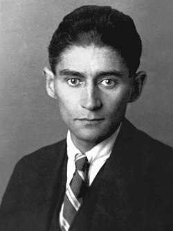

Biography
Franz Kafka (1883-1924) was a German-speaking Jewish writer. Born in Prague, Kafka worked as an injury lawyer in the Workers’ Accident Insurance Institute. He worked with people, who due to the development of industrialization, and poor working conditions, had gotten injured by heavy machinery. The horrors that he saw and heard of directly influenced his writing while he wrote In The Penal Colony specifically when he writes about the “remarkable apparatus.”1
Kafka’s father was a businessman, often criticizing his literary work. Because of this and other events in his upbringing, Kafka suffered from depression, severe anxiety, and imposter syndrome. On top of that, Franz Kafka was a perfectionist. All these qualities made it so that Kafka hated most of the pieces he wrote, publishing very few pieces throughout his lifetime. Kafka wrote In The Penal Colony in two weeks near the start of World War I in 1914, however he didn’t like the ending, and so the publication was delayed by five years. This shows the work and thought that went into his writing.

In 1916 Kafka gave a public reading of his story in an art gallery in Munich. The extremely graphic descriptions of torture machines made people in the audience faint and walk out in disgust. When Kafka finally decided to share his work, he was met with rejection. This crushed his confidence, and the same thing happened once more in 1919 when the short story was first published. Critics dismissed the story, and Kafka felt as if his father was correct. Kafka was diagnosed with tuberculosis around the same period of time, and he was worried he would die an unknown author. Right before he finally died in 1924, Kafka asked his friend to burn all his works2, showing just how crushed his self-esteem was.
- Franz Kafka, “In the Penal Colony,” trans. Ian Johnston, Library of Short Stories, n.d., 1, libraryofshortstories.com.
- Daniel Solove, “Franz Kafka’s Last Wishes and the Kafka Myths,” TeachPrivacy, September 2, 2008, https://teachprivacy.com.